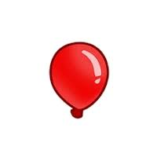

BTD(Bloons Tower Defense) is a game about stoping balloons from passing the track by using monkeys(towers) to pop them. There are many different types of monkies in the game to choose from, some more expensive than others. The player earns money from poping bloons so they can upgrade their placed monkeys to pop bloons more effeciently. If the player looses all of their lives from bloons passing the track, they loose.
This is a typical bloon the one and only enemy of you in the game. This particular one takes one damage to pop. There are many different tiers of bloons and they get progessivly harder to pop as the rounds go on. Each tier will also give the player more money when they are poped.
| Type | Health |
|---|---|
| Red | 1 |
| Blue | 2 |
| Green | 3 |
Find out more on NinjaKiwi official site